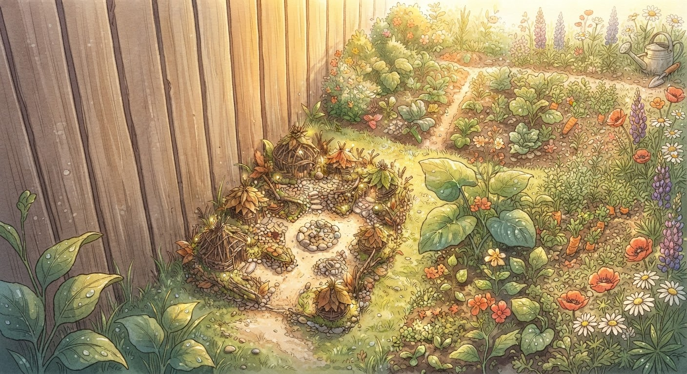
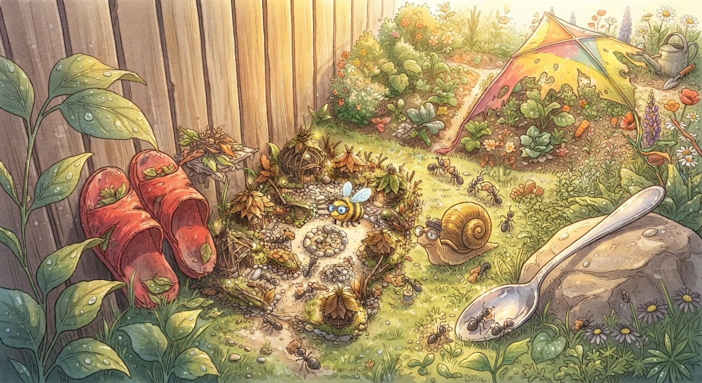
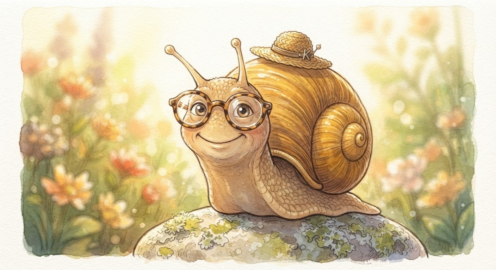
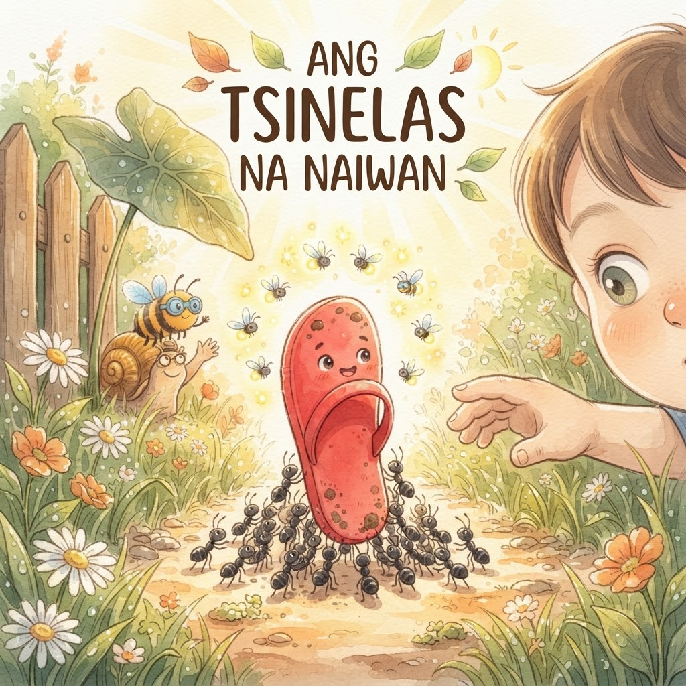
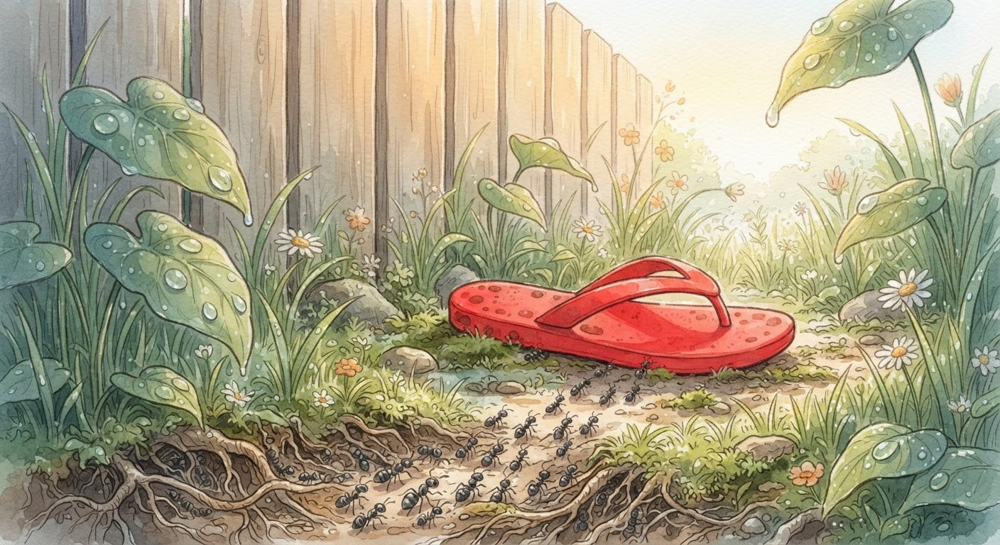
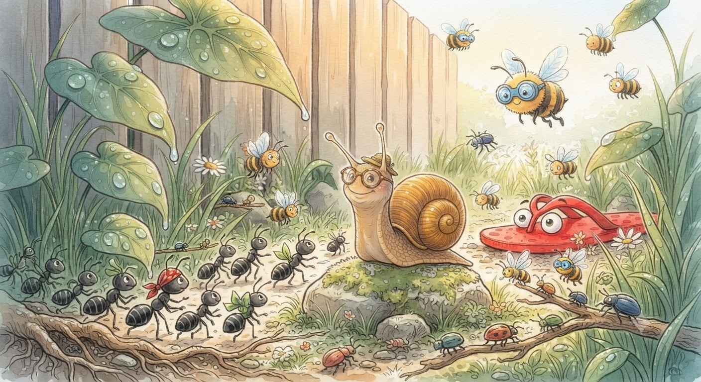
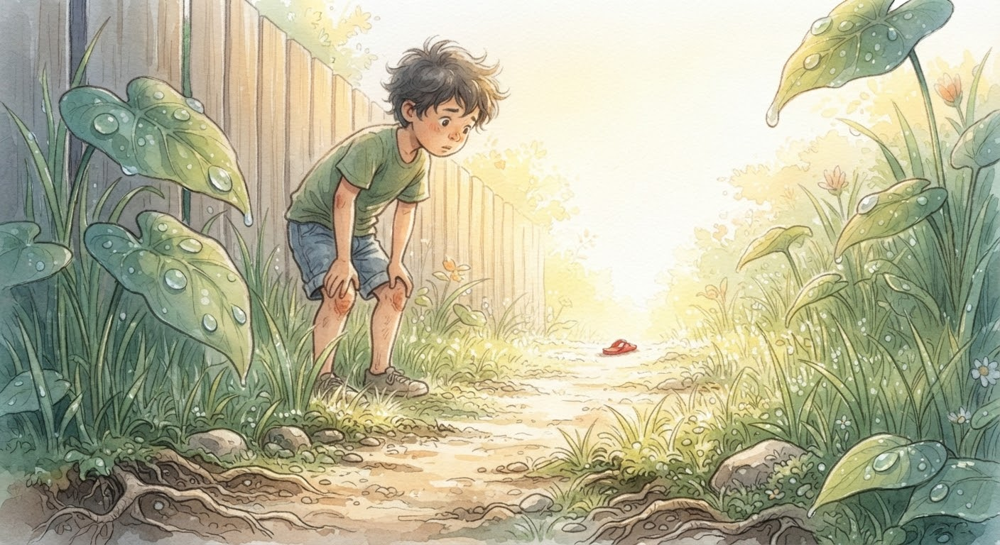
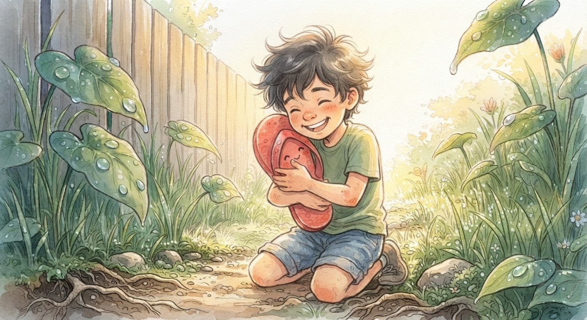
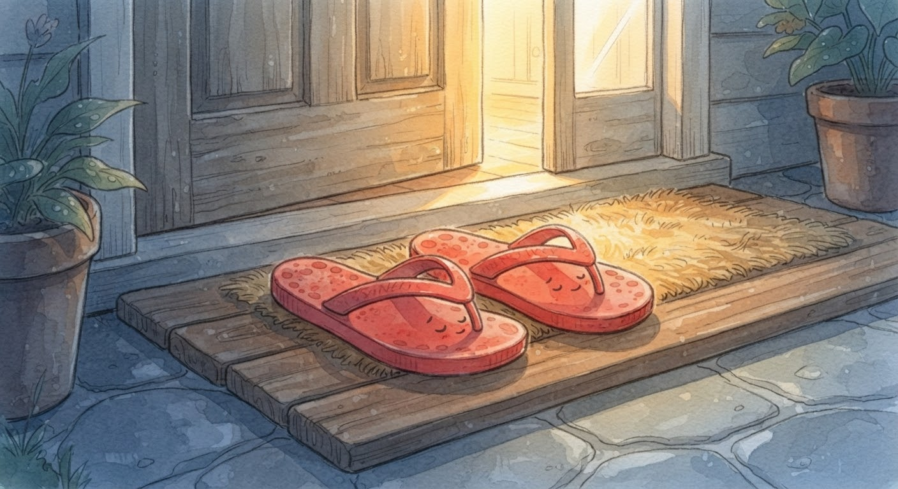
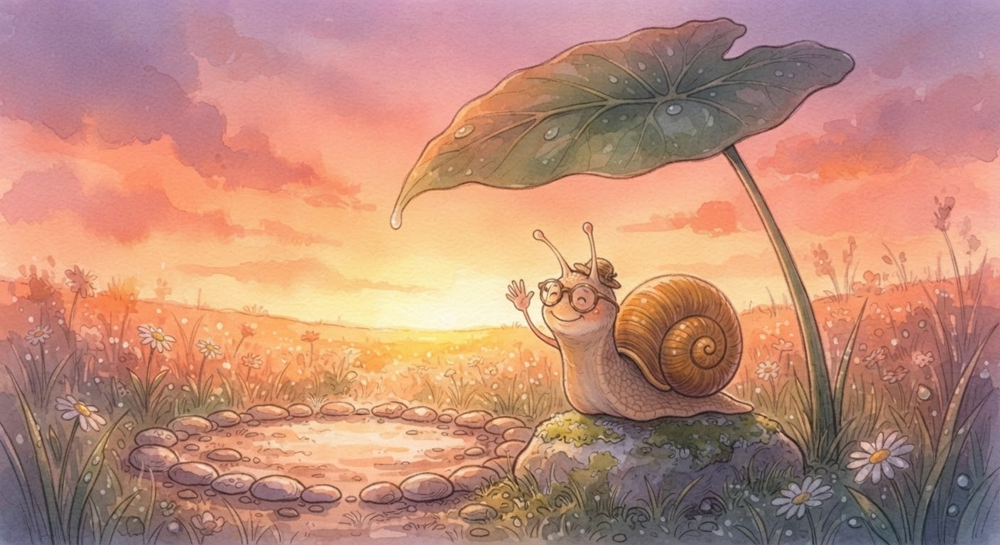

Sa Barangay ng mga Maliliit na Bagay.

Sa Barangay ng mga Maliliit na Bagay. Sa likod ng bahay, sa pagitan ng bakod at ng hardin, may barangay na hindi nakikita ng mga tao. Napakaliit nito, kasinliit ng mga kuwentong dala nito.

Dito nakatira ang mga langgam, bubuyog, at kuhol. Dito rin nakatira ang mga bagay na naiwan at nakalimutan: mga tsinelas, kutsara, at saranggola.

Ang pinuno ng barangay ay si Kapitan Susô, ang kuhol. Mabagal siyang kumilos, pero magaling siyang makinig. “Walang problemang masyadong maliit,” lagi niyang sabi.

Tuwing umaga, nagpupulong ang lahat sa ilalim ng malaking dahon ng gabi. May dalang problema ang bawat isa. Halika, sumama ka. Pakinggan natin ang kanilang mga kuwento.
Ang Tsinelas na Naiwan

Unang Kuwento: Ang Tsinelas na Naiwan.

Isang umaga, may dumating na bagong residente sa barangay. Isang pulang tsinelas, mag-isa, nakahiga sa tabi ng bakod. Ang pangalan niya ay Tsinelas Tomas.

“Nasaan ako?” tanong ni Tomas. “Nasaan ang kapares ko?” Kahapon, magkasama pa sila ng batang si Migo. Pero nakalimutan siya ni Migo sa labas.

Umupo si Tomas sa ilalim ng malaking dahon, at malungkot ang mukha. “Wala na akong silbi,” bulong niya. “Ano ang tsinelas na isa lang?”

Lumapit si Kapitan Susô, mabagal pero sigurado. “Tomas, bakit ka umiiyak?” “Naiwan ako,” sagot ni Tomas. “At hindi ko alam kung babalikan pa ako.”

“Hindi tayo basta-basta iniiwan,” sabi ni Kapitan Susô. “Minsan, nakakalimot lang ang mga tao. Pero may paraan para makita ka nila.” “Paano?” tanong ni Tomas.

Tinawag ni Kapitan Susô ang mga langgam. “Mga kaibigan, tulungan natin si Tomas!” At sumunod ang buong barangay.

Binuhat ng mga langgam ang tsinelas papunta sa gitna ng landas. Nagkumpulan ang mga alitaptap sa paligid, para sumikat ang kulay niya. Pulang-pula si Tomas, parang bulaklak sa gitna ng damo.

Kinabukasan, lumabas si Migo para maghanap. “Nasaan na ba ang isa kong tsinelas?” bulong niya. At nakita niya ang pulang kulay sa gitna ng landas.

“Nandiyan ka pala!” sigaw ni Migo. Dinampot niya si Tomas, at niyakap pa. “Pasensya na, hindi na kita iiwan ulit!”

Bago umalis, sumilip si Tomas sa mga kaibigan niya. Hindi sila nakikita ni Migo, pero alam ni Tomas na naroon sila. “Salamat po,” bulong niya.

Kinagabihan, magkasama na ulit ang magkapares na tsinelas. Nakahanay sila sa tabi ng pinto, mainit at ligtas. At natutunan ni Tomas na laging may paraan para makauwi.

Sa barangay, kumaway si Kapitan Susô nang marahan. “Mabuti at nakauwi ka na,” bulong niya, at ngumiti. Tapos na ang unang pulong sa ilalim ng dahon ng gabi.